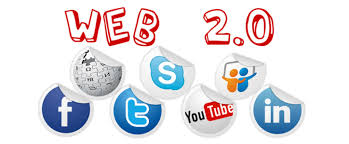

Web 2.0 refers to the second generation of the World Wide Web, characterized by dynamic content, user interaction, and social media.
Key features
- Dynamic content
- User-generated content
- Social media platforms
Impact
Web 2.0 transformed the internet into a more interactive and collaborative space, enabling new forms of communication and content creation.